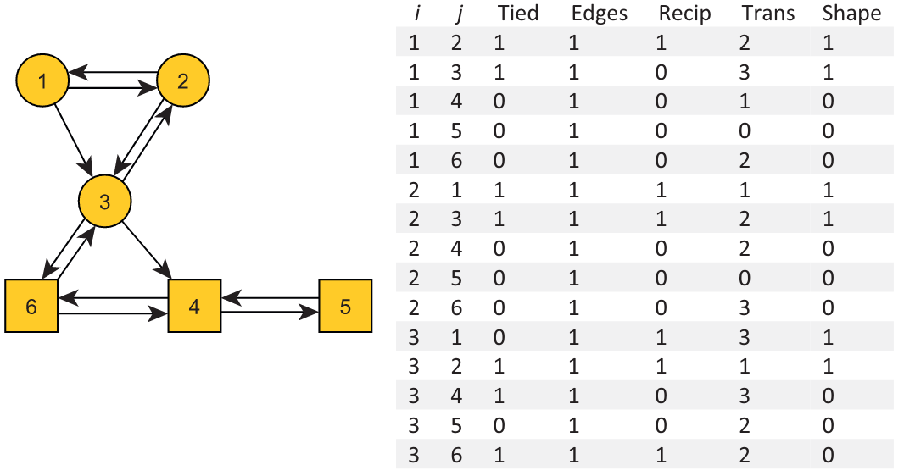
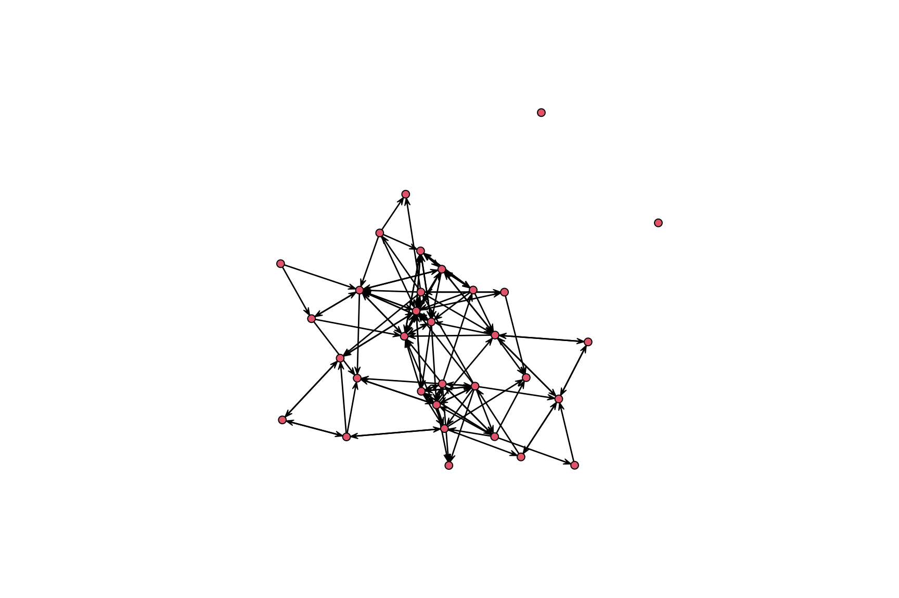
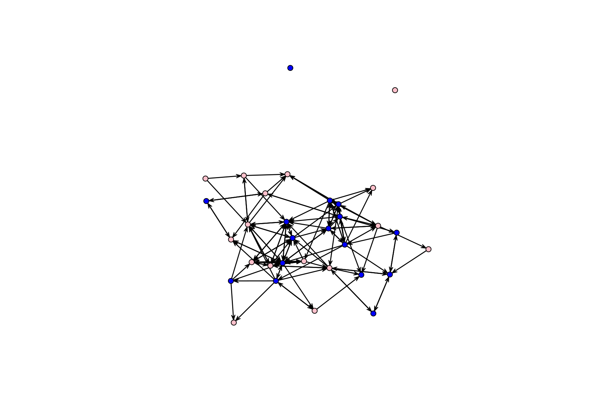
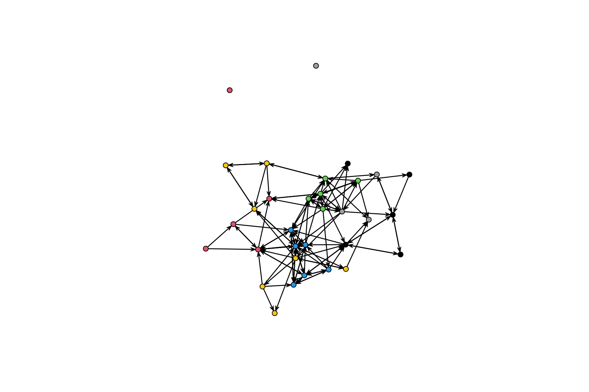

Code
library(car)
library(sna)
library(ergm)We need to load three libraries:
car, which stands for ‘Companion to Applied Regression,’ provides utility functions regarding regression modelssna, a Statnet’s library, includes many network descriptivesergm, another Statnet’s library, implements ERGMs.library(car)
library(sna)
library(ergm)This tutorial will use a toy dataset regarding the friendship relationship in a small school (see Rawlings et al., 2023). The data, which are available in the GitHub repository https://github.com/JeffreyAlanSmith, comprise two files: example_schoolmat,csv regards the friendship relationship, while example_schooldata.csv concerns node-level attributes (i.e., the characteristics of students).
# relational data
url1 <- "https://github.com/JeffreyAlanSmith/Integrated_Network_Science/raw/master/data/example_schoolmat.csv"
school_mat <- read.csv(file = url1, row.names = 1)
# node attributes
url2 <- "https://github.com/JeffreyAlanSmith/Integrated_Network_Science/raw/master/data/example_schooldata.csv"
school_attributes <- read.csv(file = url2)What is the objective of ERGMs?
ERGMs test how and to what extent an observed network exhibits certain tie formation mechanisms. Example of tie formation mechanisms include (but they are not limited to):
What is the intuition behind ERGMs?
ERGMs consider observed networks as mixtures of network effects
ERGMs estimate the probabilities that the observed network \(y\) comes from the class \(Y\) based on a set of endogenous and exogenous tie formation explanations (aka ‘model effects’). ERGM’s general form is the following:
\[\begin{equation}\label{eq:ergm_gen_form} Pr(Y = y|X) = \frac{exp[\theta^{T}g(y,X)]}{k(\theta)} \end{equation}\]
where \(\theta^{T}\) is the vector of regression coefficients regarding the model effects \(g(y, X)\), and \(k(\theta)\) is the summation of the numerator’s value over the set of all possible networks \(y\).
To better understand ERGM’s general form, we can dispense the numerator of the previous equation as follows:
\[\begin{equation} [\theta_{1}, \theta_{2}, ..., \theta_{n}]\begin{bmatrix} g_{1}(y) \\ g_{2}(y) \\ \vdots \\ g_{n}(y) \end{bmatrix} = \sum_{i=1}^{n} \theta_{i} \cdot g_{i}(y) \end{equation}\]
This equation highlights that the probability of observing a particular network in a set of networks―e.g., ten-node networks exhibiting significant in-degree popularity and reciprocity―as a function of many \(g(y)\). We can also dispense the equation in terms of the log odds of an edge:
\[\begin{equation} logit(Y_{ij} = 1) = \theta^{T} \cdot \delta[g(y, X)]_{ij} \end{equation}\]
where \(\delta[(y, X)]\) is the ‘change’ statistic, that is, the change in \(g(y,X)\) when the value of only the \(ij\) dyad is changed from 0 to 1.
ERGM libraries, like R’s ergm, do that for you. However, it is important that you familiarize yourself with computing the change statistic \(\delta[g(y, X)]\). Here are two key premises:
The below-displayed figure illustrates this kind of thought experiment visually. The algorithm will replicate the thought experiment for us, iterating over all possible pairs of node ${i, j} creating the input for the Logit regression. The final dataset will have \(N \cdot (N -1)\) rows (aka ties) and \(K + 1\) columns, where \(K\) is the number of selected model effects. The \(+ 1\) signifies the column with the dependent variable information (aka, whether a tie is present or absent).
. To browse the model effects available in ergm, we call ?ergmTerms in R/radian shells. Another helpful command is vignette("ergm-term-crossRef"), which retrieves a tables that summarize the keywords for terms (with tables for commonly used terms, operator terms, and all terms), definitions for all terms, and a list of keywords with the terms they refer to.
!! Warning ¡¡: ergm, like the other libraries in statnet, does not integrate with tidyverse. Hence, we have to rely on R builtin objects when it comes manipulating the network data to pass to ergm as input. First, we create a matrix object containing friendship data.
school_mat <- as.matrix(school_mat)For the sake of redundancy, we recode the values in school_attributes$gender. Then, we wrap the node attributes up in a list.
school_attributes$gender_recode <- recode(school_attributes$gender,
as.factor = F,
"0 = 'male'; 1 = 'female'"
)
attribute_list <- do.call(list, school_attributes)Now, we can create a statnet’s network object as follows:
school_net <- network(
x = school_mat, directed = T,
vertex.attr = attribute_list
)Using the sna library, we can compute a set of network descriptives. For example, we can calculate the network’s density, the average in-degree and out-degree, the reciprocity, and the transitivity. To start, we may want to retrieve the key features of school_net.
school_net Network attributes:
vertices = 32
directed = TRUE
hyper = FALSE
loops = FALSE
multiple = FALSE
bipartite = FALSE
total edges= 124
missing edges= 0
non-missing edges= 124
Vertex attribute names:
gender gender_recode grade ids ses vertex.names
No edge attributesThen, we may want to familiarize ourselves with the network’s structure by plotting it.
plot(school_net)
By plotting the network, we can also explore how node attributes resolve in the network’s structure. For example, we can color the nodes according to gender and grade.
cols <- recode(school_attributes$gender,
as.factor = F,
"0 = 'blue'; 1 = 'pink'"
)
plot(school_net, vertex.col = cols)
Is there any preliminary evidence regarding gender-driven homophily in the network?
plot(school_net, vertex.col = school_attributes$grade)
How about grade-driven homophily?
The sna library provides a set of functions to compute network descriptives. For example, we can calculate the network’s density, the average in-degree and out-degree, the reciprocity, and the transitivity. Let us start by computing network density.
gden(school_net)[1] 0.125Is 0.125 a high or low density value? How does it compare to the density of other networks? We can run a Conditional Uniform Graph Test (CGU) test to compare the density of school_net with the density of a random network. Here is how to do it:
cug.test(
dat = school_net, FUN = "gden", cmode = "size"
)
Univariate Conditional Uniform Graph Test
Conditioning Method: size
Graph Type: digraph
Diagonal Used: FALSE
Replications: 1000
Observed Value: 0.125
Pr(X>=Obs): 1
Pr(X<=Obs): 0 Let us consider the reciprocity of the network. How can we compute it?
grecip(school_net, measure = "dyadic.nonnull") Mut
0.4090909 ~40% of the ties are reciprocated in the friendhsip network. Is this a high or low value? How does it compare to the reciprocity of other networks? We can run a CGU test to compare the reciprocity of school_net with the reciprocity of a random network. Here is how to do it:
cug.test(
dat = school_net, FUN = "grecip",
FUN.args = list(measure = "dyadic.nonnull"), cmode = "edges"
)
Univariate Conditional Uniform Graph Test
Conditioning Method: edges
Graph Type: digraph
Diagonal Used: FALSE
Replications: 1000
Observed Value: 0.4090909
Pr(X>=Obs): 0
Pr(X<=Obs): 1